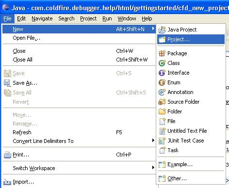
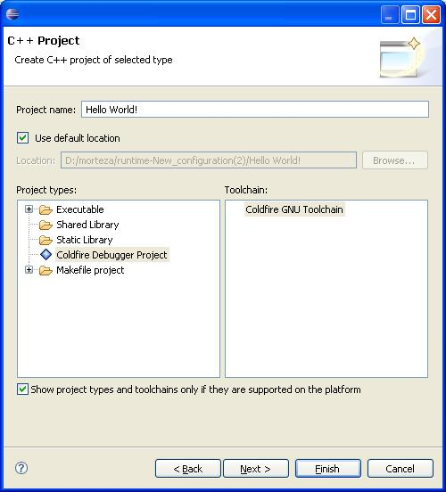

Creating New Coldfire C/C++ Project
The following describe steps to make a Coldfire C/C++ project. The makefile making
the codes for the Coldfire architecture will be generated automatically by the Coldfire
Debugger.
Creating Project
- Select File->New->Project menu.

- In the new project wizard page, expand C or C++ folder and select C or C++
project. Then click Next.
- Enter the project name. Select Coldfire Debugger Project from the project
types list, and select Coldfire GNU toolchain as the project toolchain.
Click Finish (By default the Coldfire Debugger will choose m68k-coff as toolchain. but
you can change the makeing parameters by clicking the next button).A new project
will be added to the workspace package explorer view.
At this time the debugger only supports Debug method. You can
remove debug informations inside the Project Builder properties and remove the
-g parameters tick.
